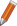
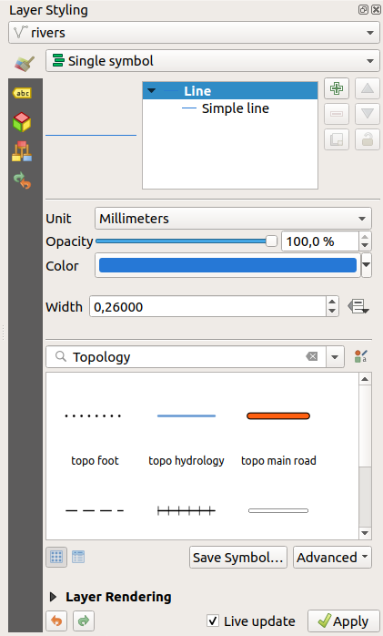
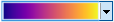

Whenever you need help on a specific topic, you can access the corresponding
page in the current User Manual via the
Help button available in most dialogs — please note that third-party
plugins can point to dedicated web pages.
By default, QGIS provides many panels to work with.
Some of these panels are described below while others may be found in different
parts of the document. A complete list of default panels provided by QGIS is
available via the View ► Panels ► menu and mentioned at
Panels.
The Layers panel (also called the maplegend) lists all
the layers in the project and helps you
manage their visibility. You can show or hide it by pressing Ctrl+1.
A layer can be selected and dragged up or down in the
legend to change the Z-ordering. Z-ordering means that layers listed nearer the
top of the legend are drawn over layers listed lower down in the legend.
Note
The Z-ordering behavior can be overridden by the
Layer Order panel.
At the top of the Layers panel, a toolbar allows you to:
Open the layer styling dock (F7): toggle the layer styling
panel on and off.
Add new group
Manage Map Themes: control visibility of layers and
arrange them in different map themes.
filter layers in the legend tree:
Filter Legend by Map Content: only the layers that are set
visible and whose features intersect the current map canvas have their style
rendered in the layers panel. Otherwise, a generic NULL symbol is applied to
the layer. Based on the layer symbology, this is a convenient way to identify
which kind of features from which layers cover your area of interest.
Show Private Layers: a convenient shortcut to display and
interact with private layers
in the Layers panel without modifying the project settings.
Filter Legend by Expression: apply an
expression to remove styles from the selected layer tree that have no feature
satisfying the condition. This can be used to highlight features
that are within a given area/feature of another layer.
From the drop-down list, you can edit and clear the expression currently applied.
Expand All or Collapse All
layers and groups in the layers panel.
The Manage Map Themes drop-down button provides access to
convenient shortcuts to manipulate visibility of the layers in the Layers
panel:
Show All Layers
Hide All Layers
Show Selected Layers
Hide Selected Layers
Toggle Selected Layers: changes the visibility of
the first selected layer in the panel, and applies that state to the other selected
layers. Also accesible through Space shortcut.
Toggle Selected Layers Independently: changes the visibility status
of each selected layer
Hide Deselected Layers
Beyond the simple control of layer visibility,
the Manage Map Themes menu allows you to configure
Map Themes in the legend and switch from one map theme to another.
A map theme is a snapshot of the current map legend that records:
the visible classes of the style, ie the layer checked node items in the
Layers panel. This applies to symbologies
other than the single symbol rendering
the collapsed/expanded state of the layer node(s) and the group(s) it’s placed
inside
To create a map theme:
Check a layer you want to show
Configure the layer properties (symbology, diagram, labels…) as usual
A map theme does not remember the current details of the properties:
only a reference to the style name is saved, so whenever you apply
modifications to the layer while this style is enabled (eg change the
symbology rendering), the map theme is updated with new information.
Repeat the previous steps as necessary for the other layers
If applicable, expand or collapse groups or visible layer nodes in the
Layers panel
Click on the Manage Map Themes button on top of the panel,
and Add Theme…
Enter the map theme’s name and click OK
The new theme is listed in the lower part of the drop-down menu.
You can create as many map themes as you need: whenever the current combination
in the map legend (visible layers, their active style, the map legend nodes)
does not match any existing map theme contents as defined above, click on
Add Theme… to create a new map theme, or use
Replace Theme ► to update a map theme.
You can rename the active map theme with Rename Current Theme… or
use the Remove Current Theme button to delete it.
Map themes are helpful to switch quickly between different preconfigured
combinations: select a map theme in the list to restore its combination.
All configured themes are also accessible in the print layout, allowing you to
create different map items based on specific themes and independent of
the current main canvas rendering (see Map item layers).
11.2.1.2. Overview of the context menu of the Layers panel
At the bottom of the toolbar, the main component of the Layers panel is the
frame listing vector or raster layers added to the project, optionally
organized in groups. Depending on the item selected in the panel, a
right-click shows a dedicated set of options presented below.
Layers in the legend window can be organized into groups. There are two ways to
do this:
Press the icon to add a new group. Type in a name for
the group and press Enter. Now click on an existing layer and
drag it onto the group.
Select some layers, right-click in the legend window and choose
Group Selected. The selected layers will automatically be placed
in a new group.
To move a layer out of a group, drag it out, or right-click on it and
choose Move Out of Group: the layer is moved from the group and
placed above it. Groups can also be nested inside other groups. If a layer
is placed in a nested group, Move Out of Group will move the layer
out of all nested groups.
To move a group or layer to the top of the layer panel, either drag it to
the top, or choose Move to Top. If you use this option on a layer nested
in a group, the layer is moved to the top in its current group.
The Move to Bottom option follows the same logic to move layers
and groups down.
The checkbox for a group will show or hide the checked layers in the group
with one click.
With Ctrl pressed, the checkbox will also turn on or off all
the layers in the group and its sub-groups.
Ctrl-click on a checked / unchecked layer will uncheck / check the
layer and all its parents.
Enabling the Mutually Exclusive Group option means you can make a group have
only one layer visible at the same time.
Whenever a layer within the group is set visible the others will be toggled not visible.
It is possible to select more than one layer or group at the same time by
holding down the Ctrl key while clicking additional layers. You can then move
all selected layers to a new group at the same time.
You may also delete more than one layer or group at once by selecting
several items with the Ctrl key and then pressing Ctrl+D:
all selected layers or groups will be removed from the layers list.
11.2.1.3.1. More information on layers and groups using indicator icon
In some circumstances, icons appears next to the layer or group in the
Layers panel to give more information about the layer/group. These
symbols are:
to indicate that the layer is in edit mode and you can modify
the data
 to indicate that the layer being edited has some unsaved changes
to indicate a filter applied
to the layer. Hover over the icon to see the filter expression and double-click
to update the query
to identify layers that are
required in the project, hence non removable
to identify a layer whose data source was not available
at the project file opening (see Handling broken file paths).
Click the icon to update the source path or select Repair Data Source…
entry from the layer contextual menu.
to remind you that the layer is a temporary scratch
layer and its content will be discarded when you
close this project. To avoid data loss and make the layer permanent, click
the icon to store the layer in any of the OGR vector formats supported by QGIS.
for layers with coordinates stored in a coordinate
reference system which is inherently low accuracy (requires the
corresponding setting to be enabled)
to identify a temporal layer controlled by canvas animation
From the Layers panel, you have shortcuts to change the layer rendering quickly
and easily. Right-click on a vector layer and select Styles ►
in the list in order to:
see the styles currently applied to the layer. If
you defined many styles for the layer, you can switch from one to another
and your layer rendering will automatically be updated on the map canvas.
copy part or all of the current style, and when applicable, paste a copied
style from another layer
Tip
Quickly share a layer style
From the context menu, copy the style of a layer and paste it to a group
or a selection of layers: the style is applied to all the layers that
are of the same type (vector/raster) as the original layer and,
for vector layers, have the same geometry type (point, line or polygon).
rename the current style, add a new style (which is actually a copy of
the current one) or delete the current style (when multiple styles are
available).
Note
The previous options are also available for raster or mesh layers.
update the symbol color using a Color Wheel.
For convenience, the recently used colors are also available at the bottom
of the color wheel.
Edit Symbol…: open the Symbol Selector
dialog and change feature symbol (symbol, size, color…).
When using a classification symbology type (based on categorized, graduated or
rule-based), the aforementioned symbol-level
options are available from the class entry context menu. Also provided are the
Toggle Items, Show All
Items and Hide All Items entries to switch the
visibility of all the classes of features. These avoid (un)checking items
one by one.
Tip
Double-clicking a class leaf entry also opens the
Symbol Selector dialog.
The Layer Styling panel (also enabled with Ctrl+3) is
a shortcut to some of the functionalities of the Layer Properties
dialog. It provides a quick and easy way to define the rendering and the
behavior of a layer, and to visualize its effects without having to open the
layer properties dialog.
In addition to avoiding the blocking (or “modal”) layer properties dialog, the layer
styling panel also avoids cluttering the screen with dialogs, and
contains most style functions (color selector, effects properties, rule edit,
label substitution…): e.g., clicking color buttons inside the layer style panel
causes the color selector dialog to be opened inside the layer style panel itself
rather than as a separate dialog.
From a drop-down list of current layers in the layer panel, select an item and:
Depending on the layer type, set:
Symbology, Transparency,
and Histogram properties for raster layer.
These options are the same as in the Raster Properties Dialog.
Symbology, Labels, Mask and 3D View properties for vector layer.
These options are the same as in the The Vector Properties Dialog
and can be extended by custom properties introduced by third-party plugins.
Symbology and 3D View properties
for mesh layer.
These options are the same as in the Mesh Dataset Properties.
Manage the associated style(s) in the Style Manager
(more details at Managing Custom Styles).
See the History of changes you applied to the
layer style in the current project: you can therefore cancel or restore to any
state by selecting it in the list and clicking Apply.
Another powerful feature of this panel is the Live update checkbox.
Tick it to render your changes immediately on the map canvas:
you no longer need to click the Apply button.

Fig. 11.2 Defining a layer’s symbology from the layer styling panel
By default, layers shown on the QGIS map canvas are drawn following their order
in the Layers panel: the higher a layer is in the panel, the
higher (hence, more visible) it’ll be in the map view.
You can define a drawing order for the layers independent of the order in the
layers panel with the Layer Order panel enabled
in View ► Panels ► menu or with Ctrl+9.
Check Control rendering order underneath
the list of layers and reorganize the layers in the panel as you want. This
order becomes the one applied to the map canvas.
For example, in Fig. 11.3, you can see that the airports
features are displayed over the alaska polygon despite those layers’
respective placement in the Layers panel.
Unchecking Control rendering order will
revert to default behavior.
Fig. 11.3 Define a layer order independent of the legend
The Overview panel (Ctrl+8) displays a map with
a full extent view of some of the layers. The Overview map is filled with layers
using the Show in Overview option from the Layer
menu or in the layer contextual menu. Within the view,
a red rectangle shows the current map canvas extent, helping you quickly to
determine which area of the whole map you are currently viewing. If you
click-and-drag the red rectangle in the overview frame, the main map view
extent will update accordingly.
Note that labels are not rendered to the map overview even
if the layers used in the map overview have been set up for labeling.
When loading or processing some operations, you can track and follow messages
that appear in different tabs using the Log Messages Panel.
It can be activated using the most right icon in the bottom status bar.
For each layer being edited, the Undo/Redo (Ctrl+5) panel
shows the list of actions carried out, allowing you
quickly to undo a set of actions by selecting the action listed above.
More details at Undo and Redo edits.
the statistics to return using the drop-down button at the bottom-right of the
dialog. Depending on the field’s (or expression’s values) type, available
statistics are:
Statistics
String
Integer
Float
Date
Count
Count Distinct Value
Count Missing value
Sum
Mean
Standard Deviation
Standard Deviation on Sample
Minimal value
Maximal value
Range
Minority
Majority
Variety
First Quartile
Third Quartile
Inter Quartile Range
Minimum Length
Maximum Length
Mean Length
Table: Statistics available for each field type
The statistical summary can be:
returned for the whole layer or selected features only
recalculated using the button when the underlying data source changes
(eg, new or removed features/fields, attribute modification)
copied to the clipboard and pasted as a table in another application
Sometimes, you’d like to keep some layers in different projects, but with the
same style. You can either create a default style for
these layers or embed them from another project to save time and effort.
Embed layers and groups from an existing project has some advantages over
styling:
All types of layers (vector or raster, local or online…) can be added
Fetching groups and layers, you can keep the same tree structure of the
“background” layers in your different projects
While the embedded layers are editable, you can’t change their properties
such as symbology, labels, forms, default values and actions, ensuring
consistency across projects
Modify the items in the original project and changes are propagated to all
the other projects
If you want to embed content from other project files into your project, select
Layer ► Embed Layers and Groups:
Click the … button to look for a project: you can see the content of the
project (see Fig. 11.5)
Hold down Ctrl ( or Cmd) and click on the layers and
groups you wish to retrieve
Click OK
The selected layers and groups are embedded in the Layers
panel and displayed on the map canvas. An
icon is added next to their name for recognition and hovering over displays
a tooltip with the original project file path.
Like any other layer, an embedded layer can be removed from the project by
right-clicking on the layer and clicking Remove.
Tip
Change rendering of an embedded layer
It’s not possible to change the rendering of an embedded layer, unless you make
the changes in the original project file. However, right-clicking on a layer and
selecting Duplicate creates a layer which is fully-featured and not
dependent on the original project. You can then safely remove the linked
layer.
Scale-dependent rendering allows you to specify the minimum and maximum scales
at which a layer (raster or vector) will be visible. To set scale-dependent rendering,
open the Properties dialog by double-clicking on the layer in the legend.
On the Rendering tab, tick Scale
dependent visibility and enter the Minimum (exclusive) and
Maximum (inclusive) scale values.
You can also activate scale dependent visibility on a layer from the Layers panel.
Right-click on the layer and in the context menu, select Set Layer Scale Visibility.
The Set to current canvas scale button allow you to use
the current map canvas scale as boundary of the range visibility.
Note
When a layer is not rendered in the map canvas because the map scale is out of
its visibility scale range, the layer is greyed in the Layers panel and
a new option Zoom to Visible Scale appears in the layer context menu.
Select it and the map is zoomed to the layer’s nearest visibility scale.
To suspend rendering, click the Render checkbox in the
bottom-right corner of the status bar. When Render
is not checked, QGIS does not redraw the canvas in response to any of
the events described in the section Rendering. Examples of when you
might want to suspend rendering include:
adding many layers and symbolizing them prior to drawing
adding one or more large layers and setting scale dependency before drawing
adding one or more large layers and zooming to a specific view before drawing
any combination of the above
Checking the Render checkbox enables rendering and
causes an immediate refresh of the map canvas.
You can set an option to always load new layers without drawing them. This
means the layer will be added to the map, but its visibility checkbox in the
legend will be unchecked by default. To set this option, choose menu option
Settings ► Options and click on the Rendering
tab. Uncheck By default new layers added to the map
should be displayed. Any layer subsequently added to the map will be off
(invisible) by default.
To stop the map drawing, press the Esc key. This will halt the refresh of
the map canvas and leave the map partially drawn. It may take a bit of time
between pressing Esc for the map drawing to halt.
QGIS has an option to influence the rendering quality of the map. Choose menu
option Settings ► Options, click on the Rendering
tab and select or deselect Make lines appear less jagged
at the expense of some drawing performance.
There are some settings that allow you to improve rendering speed. Open the QGIS options
dialog using Settings ► Options, go to the Rendering
tab and select or deselect the following checkboxes:
Use render caching where possible to speed up redraws.
Render layers in parallel using many CPU cores and then
set the Max cores to use.
The map renders in the background onto a separate image and each
Map Update interval, the content from this
(off-screen) image will be taken to update the visible screen representation.
However, if rendering finishes faster than this duration, it will be shown
instantaneously.
With Enable Feature simplification by default for newly
added layers, you simplify features’ geometry (fewer nodes) and as a result,
they display more quickly.
Be aware that this can cause rendering inconsistencies.
There are multiple ways to zoom and pan to an area of interest.
You can use the Map Navigation toolbar, the mouse and keyboard on
the map canvas and also the menu actions from the View
menu and the layers’ contextual menu in the Layers panel.
Icon
Label
Usage
View menu
Map Navigation Toolbar
Layer Contextual Menu
Pan Map
When activated, left click anywhere on the map canvas to pan the map at
the cursor position. You can also pan the map by holding down the left
mouse button and dragging the map canvas.
Zoom In
When activated, left click anywhere on the map canvas to zoom in one
level. The mouse cursor position will be the center of the
zoomed area of interest. You can also zoom in to an area
by dragging a rectangle on the map canvas with the left mouse button.
Zoom Out
When activated, left click anywhere on the map canvas to zoom out one
level. The mouse cursor position will be the center of the
zoomed area of interest. You can also zoom out from an area
by dragging a rectangle on the map canvas with the left mouse button.
Pan Map to Selection
Pan the map to the selected features of all the selected layers in the
Layers panel.
Zoom To Selection
Zoom to the selected features of all the selected layers in the
Layers panel.
Zoom To Layer(s)
Zoom to the extent of all the selected layers in the
Layers panel.
Zoom Full
Zoom to the extent of all the layers in the project
or to the project full extent.
Zoom Last
Zoom the map to the previous extent in history.
Zoom Next
Zoom the map to the next extent in history.
Zoom to Native Resolution
Zoom the map to a level where one pixel of the active raster layer covers
one screen pixel.
A Zoom factor can be set under the
Settings ►Options ► Map
tools menu to define the scale behavior while zooming. There, you can also
set a list of Predefined Scales that will be available at the
bottom of the map canvas.
In addition to using the PanZoom In and
Zoom Out tools described above, you can hold the mouse wheel
inside of the map canvas and drag the mouse cursor (on macOS, you may need to
hold down the cmd key). You can also roll the mouse wheel to zoom in and
out on the map. The mouse cursor position will be the center of the zoomed area
of interest. Holding down Ctrl while rolling the mouse wheel results in a
finer zoom.
Holding down spacebar on the keyboard and moving the mouse cursor will
pan the map the same way dragging the map canvas with Pan does.
Panning the map is possible with the arrow keys.
Place the mouse cursor inside the map area, and press on the arrow keys
to pan up, down, left and right.
The PgUp and PgDown keys on the keyboard will cause
the map display to zoom in or out following the zoom factor set. Pressing
Ctrl++ or Ctrl+- also performs an immediate zoom in/out
on the map canvas.
When certain map tools are active (Identify, Measure…), you can perform a
zoom by holding down Shift and dragging a rectangle on the map to zoom
to that area. This is not enabled for selection tools (since they
use Shift for adding to selection) or edit tools.
Spatial Bookmarks allow you to “bookmark” a geographic location and return to
it later. By default, bookmarks are saved in the user’s profile (as User
Bookmarks), meaning that they are available from any project the user opens.
They can also be saved for a single project (named
Project Bookmarks) and stored within the project file, which can
be helpful if the project is to be shared with other users.
Select the menu option View ►New Spatial Bookmark…,
press Ctrl+B or right-click the Spatial
Bookmarks entry in
the Browser panel and select New Spatial Bookmark.
The Bookmark Editor dialog opens.
Enter or select a group name in which to store related bookmarks
Select the extent of the area you wish to save, using the extent selector;
the extent can be calculated from a loaded layer extent, the current map
canvas or drawn over the current map canvas.
Indicate the CRS to use for the extent
Select whether the bookmark will be Saved inUser
Bookmarks or Project Bookmarks
Press Save to add the bookmark to the list
Note that you can have multiple bookmarks with the same name.
To use and manage bookmarks, you can either use the Spatial Bookmarks
panel or Browser.
Select View ►Show Spatial
Bookmark Manager or press Ctrl+7
to open the Spatial Bookmarks Manager panel.
Select View ►Show Bookmarks
or Ctrl+Shift+B to show
the Spatial Bookmarks entry in the
Browser panel.
You can perform the following tasks:
Task
Spatial Bookmark Manager
Browser
Zoom to a Bookmark
Double-click on it, or select the bookmark and press the
Zoom to bookmark button.
Double-click on it, drag and drop it to the map canvas, or right-click
the bookmark and select Zoom to Bookmark.
Delete a bookmark
Select the bookmark and click the Delete bookmark button.
Confirm your choice.
Right-click the bookmark and select Delete Spatial Bookmark.
Confirm your choice.
Export bookmarks to XML
Click the Import/Export Bookmarks button and select
Export.
All the bookmarks (user or project) are saved in an xml file.
Select one or more folders (user or project) or subfolders (groups),
then right-click and select Export Spatial Bookmarks….
The selected bookmark subset is saved.
Import bookmarks from XML
Click the Import/Export Bookmarks button and
select Import.
All bookmarks in the XML file are imported as user bookmarks.
Right-click the Spatial Bookmarks entry or one of its folders (user or
project) or subfolders (groups) to determine where to import the
bookmarks, then select Import Spatial Bookmarks.
If performed on the Spatial Bookmarks entry, the bookmarks
are added to User Bookmarks.
Edit bookmark
You can change a bookmark by changing the values in the table. You can
edit the name, the group, the extent and if it is stored in the project or
not.
Right-click the desired bookmark and select Edit Spatial
Bookmark….
The Bookmark Editor will open, allowing you to redefine every
aspect of the bookmark as if you were creating it for the first time.
You can also drag and drop the bookmark between folders (user and
project) and subfolders (groups).
You can also zoom to bookmarks by typing the bookmark name in the
locator.
Decorations include Grid, Title Label, Copyright Label, Image, North Arrow, Scale Bar and Layout
Extents. They are used to ‘decorate’ the map by adding cartographic elements.
The Interval X and Interval Y between the grid
marks, in map units
An Offset X and Offset Y distance of the grid
marks from the bottom left corner of the map canvas, in map units
The interval and offset parameters can be set based on the:
Canvas Extents: generates a grid with an interval that is
approximatively 1/5 of the canvas width
Active Raster Layer resolution
Tick Draw annotations to display the coordinates of
the grid marks and set:
The Annotation direction, ie how the labels would be placed
relative to their grid line. It can be:
Horizontal or Vertical for all the labels
Horizontal and Vertical, ie each label is parallel to the
grid mark it refers to
Boundary direction, ie each label follows the canvas
boundary, and is perpendicular to the grid mark it refers to
The Annotation font (text formatting, buffer, shadow…) using
the font selector widget
The Distance to map frame, margin between annotations and map
canvas limits. Convenient when exporting the map canvas
eg to an image format or PDF, and avoid annotations to be on the “paper” limits.
The Coordinate precision
Click Apply to verify that it looks as expected or OK
if you’re satisfied.
Enter the title text you want to place on the map.
You can make it dynamic using the Insert or Edit an Expression…
button.
Choose the Font for the label using the font selector
widget with full access to QGIS text formatting options. Quickly set the font color and opacity by clicking
the black arrow to the right of the font combo box.
Select the color to apply to the title’s
Background bar color.
Choose the Placement of the label in the canvas: options are
Top left, Top Center (default),
Top Right, Bottom left, Bottom Center
and Bottom Right.
Refine the placement of the item by setting a horizontal and/or vertical
Margin from Edge. These values can be in Millimeters or
Pixels or set as a Percentage of the width or height of the map canvas.
Click Apply to verify that it looks as expected or
OK if you’re satisfied.
Enter the copyright text you want to place on the map.
You can make it dynamic using the Insert or Edit an Expression…
button.
Choose the Font for the label using the font selector
widget with full access to QGIS text formatting options. Quickly set the font color and opacity by clicking
the black arrow to the right of the font combo box.
Choose the Placement of the label in the canvas: options are
Top left, Top Center,
Top Right, Bottom left, Bottom Center,
and Bottom Right (default for Copyright decoration)
Refine the placement of the item by setting a horizontal and/or vertical
Margin from Edge. These values can be in Millimeters or
Pixels or set as a Percentage of the width or height of the map canvas.
Click Apply to verify that it looks as expected or
OK if you’re satisfied.
Select a bitmap (e.g. png or jpg) or SVG image using the
…Browse button
If you have chosen a parameter enabled SVG then you can also set
a Fill or Stroke (outline) color.
For bitmap images, the color settings are disabled.
Set a Size of the image in mm. The width of selected image is used to
resize it to given Size.
Choose where you want to place the image on the map canvas with the
Placement combo box. The default position is Top Left.
Set the Horizontal and Vertical Margin from (Canvas) Edge.
These values can be set in Millimeters, Pixels or as a Percentage of
the width or height of the map canvas.
Click Apply to verify that it looks as expected and OK
if you’re satisfied.
Optionally change the color and size, or choose a custom SVG
Optionally change the angle or choose Automatic to let QGIS determine the
direction
Optionally choose the placement from the Placement combo box
Optionally refine the placement of the arrow by setting a horizontal and/or vertical
Margin from (Canvas) Edge. These values can be in Millimeters or
Pixels or set as a Percentage of the width or height of the map canvas.
Click Apply to verify that it looks as expected and OK if you’re satisfied.
Scale Bar adds a simple scale bar to the map canvas.
You can control the style and placement, as well as the labelling of the bar.
QGIS only supports displaying the scale in the same units as your map frame.
So, if the units of your project’s CRS are meters, you can’t create a scale bar in
feet. Likewise, if you are using decimal degrees, you can’t create a scale
bar to display distance in meters.
To add a scale bar:
Select menu option View ► Decorations ► Scale Bar…
to open the dialog
Select the Color of bar by choosing
a fill color (default: black) and an outline color (default: white). The scale
bar fill and outline can be made opaque by clicking on the down arrow to the right
of the color input.
Select the font for the scale bar from the Font of bar combo box
Set the Size of bar
Optionally check Automatically snap to round number
on resize to display easy-to-read values
Choose the placement from the Placement combo box
You can refine the placement of the item by setting a horizontal and/or vertical
Margin from (Canvas) Edge. These values can be in Millimeters or
Pixels or set as a Percentage of the width or height of the map canvas.
Click Apply to verify that it looks as expected or OK if you’re satisfied.
Layout Extents adds the extents of map item(s) in print
layout(s) to the canvas. When enabled, the extents of all map items within all print layouts are
shown using a lightly dotted border labeled with the name of the print layout and map item.
You can control the style and labeling of the displayed layout extents.
This decoration is useful when you are tweaking the positioning of map elements such as labels,
and need to know the actual visible region of print layouts.
Fig. 11.13 Example of layout extents displayed in a QGIS project with two print layouts. The print
layout named ‘Sights’ contains two map items, while the other print layout contains one
map item.
To add layout extent(s):
Select View ► Decorations ► Layout Extents to open
the dialog
Optionally change the symbol and labeling of the extents.
Click Apply to verify that it looks as expected and OK
if you’re satisfied.
Tip
Decorations Settings
When you save a QGIS project file, any changes you have made to Grid,
North Arrow, Scale Bar, Copyright and Layout Extents will be saved in the project and restored
the next time you load the project.
Annotations are information added to the map canvas and shown within a
balloon. This information can be of different types and annotations are
added using the corresponding tools in the Attributes Toolbar:
Text Annotation for custom formatted text
HTML Annotation to place the content of an html
file
To add an annotation, select the corresponding tool and click on the map canvas.
An empty balloon is added. Double-click on it and a dialog opens with various
options. This dialog is almost the same for all the annotation types:
At the top, a file selector to fill with the path to an html, svg
or ui file depending on the type of annotation. For text annotation,
you can enter your message in a text box and set its rendering with
the normal font tools.
Fixed map position: when unchecked, the balloon placement
is based on a screen position (instead of the map), meaning that it’s always shown
regardless the map canvas extent.
Linked layer: associates the annotation with a map layer, making it
visible only when that layer is visible.
Map marker: using QGIS symbols,
sets the symbol to display at the balloon anchor position (shown only when
Fixed map position is checked).
Frame style: sets the frame background color, transparency,
stroke color or width of the balloon using QGIS symbols.
Contents margins: sets interior margins of the annotation frame.
Annotations can be selected when an annotation tool is enabled. They can then be
moved by map position (by dragging the map marker) or by moving only the balloon.
The Move Annotation tool also allows you to move the
balloon on the map canvas.
To delete an annotation, select it and either press the Del or Backspace
button, or double-click it and press the Delete button in the properties dialog.
Note
If you press Ctrl+T while an Annotation tool (move annotation,
text annotation, form annotation) is active, the visibility states of the items
are inverted.
Tip
Layout the map with annotations
You can print or export annotations with your map to various formats using:
map canvas export tools available in the Project menu
print layout, in which case you need to check
Draw map canvas items in the corresponding map item properties
Measuring works within projected coordinate systems (e.g., UTM) and unprojected
data. The first three measuring tools behave equally to global project settings:
Unlike most other GIS, the default measurement metric is
ellipsoidal, using the ellipsoid defined in
Project ► Properties… ► General. This is true both
when geographic and projected coordinate systems are defined for the project.
If you want to calculate the projected/planimetric area or distance using cartesian
maths, the measurement ellipsoid has to be set to “None/Planimetric”
(Project ► Properties… ► General). However,
with a geographic (ie unprojected) CRS defined for the data and project, area and
distance measurement will be ellipsoidal.
However, neither the identify tool nor the field calculator will transform your
data to the project CRS before measuring. If you want to achieve this, you have
to use the vector analysis tool: Vector ► Geometry Tools ►
Add Geometry Attributes…. Here, measurement is planimetric, unless
you choose the ellipsoidal measurement.
11.4.6.2. Measure length, areas and angles interactively
Click the icon in the Attribute toolbar to begin measurements.
The down arrow near the icon switches between
length, area or angle.
The default unit used in the dialog is the one set in Project ►
Properties… ► General menu.
Note
Configuring the measure tool
While measuring length or area, clicking the Configuration button
at the bottom of the widget opens the Settings ►
Options ► Map Tools menu, where you can select the rubberband color, the
precision of the measurements and the unit behavior. You can also choose your
preferred measurement or angle units, but keep in mind that those values are
overridden in the current project by the selection made in the
Project ► Properties… ► General menu, and by the
selection made in the measurement widget.
All measuring modules use the snapping settings from the digitizing module (see
section Setting the snapping tolerance and search radius). So, if you want
to measure exactly along a line feature, or around a polygon feature, first set
its layer snapping tolerance. Now, when using the measuring
tools, each mouse click (within the tolerance setting) will snap to that layer.
By default, Measure Line measures real distances
between given points according to a defined ellipsoid.
The tool then allows you to click points on the map. Each segment length,
as well as the total, shows up in the measure window.
To stop measuring, click the right mouse button. Now it is possible
to copy all your line measurements at once to the clipboard using the
Copy All button.
Note that you can use the drop-down list near the total to change
the measurement units interactively while working with the measure tool (‘Meters’, ‘Kilometers’, ‘Feet’, ‘Yards’,
‘Miles’, ‘Nautical miles’, ‘Centimeters’, ‘Millimeters’, ‘Degrees’, ‘Map units’).
This unit is retained for the widget until a new project is created or another project
is opened.
The Info section in the dialog explains how calculations are made
according to the CRS settings available.
Measure Area: Areas can also be measured. In the
measure window, the accumulated area size appears. Right-click to stop drawing.
The Info section is also available as well as the ability to switch between
different area units (‘Square meters’, ‘Square kilometers’, ‘Square feet’, ‘Square yards’,
‘Square miles’, ‘Hectares’, ‘Acres’, ‘Square centimeters’,
‘Square millimeters’, ‘Square nautical miles’, ‘Square degrees’, ‘Map units’).
Measure Angle: You can also measure angles. The
cursor becomes cross-shaped. Click to draw the first segment of the angle you
wish to measure, then move the cursor to draw the desired angle. The measurement
is displayed in a pop-up dialog.
To select one or more features with the mouse, you can use one of the following
tools:
Select Features by area or single click
Select Features by Polygon
Select Features by Freehand
Select Features by Radius
Note
Other than Select Features by Polygon, these
manual selection tools allow you to select feature(s) on the map canvas with a
single click.
Note
Use the Select Features by Polygon tool
to use an existing polygon feature (from any layer) to select overlapping features
in the active layer.
Right-click in the polygon and choose it from the context menu that shows a
list of all the polygons that contain the clicked point.
All the overlapping features from the active layer are selected.
Tip
Use the Edit ► Select ► Reselect Features
tool to redo your latest selection.
Very useful when you have painstakingly made a selection, and then click
somewhere else accidentally and clear your selection.
While using the Select Feature(s) tool,
holding Shift or Ctrl toggles whether a feature is selected
(ie either adds to the current selection or remove from it).
For the other tools, different behaviors can be performed by holding down:
Shift: add features to the current selection
Ctrl: substract features from the current selection
Ctrl+Shift: intersect with current selection, ie only keep
overlapping features from the current selection
Alt: select features that are totally within the selection shape.
Combined with Shift or Ctrl keys, you can add or substract
features to/from the current selection.
The other selection tools, most of them available from the Attribute table, perform a selection based on a feature’s attribute
or its selection state (note that attribute table and map canvas show the
same information, so if you select one feature in the attribute table, it will
be selected on the map canvas too):
Select By Expression… select
features using expression dialog
Select Features By Value… or press F3
Deselect Features from All Layers or press
Ctrl+Alt+A to deselect all selected features in all layers
Deselect Features from the Current Active Layer
or press Ctrl+Shift+A
Select All Features or press Ctrl+A to select all
features in the current layer
Invert Feature Selection to invert the selection in
the current layer
Select by Location to select the features
based on their spatial relationship with other features (in the same or
another layer - see Select by location)
For example, if you want to find regions that are boroughs from
regions.shp of the QGIS sample data, you can:
Use the Select features using an Expression icon
Expand the Fields and Values group
Double-click the field that you want to query (“TYPE_2”)
Click All Unique in the panel that shows up on the right
From the list, double-click ‘Borough’. In the
Expression editor field, write the following query:
"TYPE_2"='Borough'
Click Select Features
From the expression builder dialog, you can also use Function
list ► Recent (Selection) to make a selection that you have used before. The
dialog remembers the last 20 expressions used. See Expressions
for more information and examples.
Tip
Save your selection into a new file
Users can save selected features into a New Temporary Scratch Layer or a
New Vector Layer using Edit ► Copy Features and
Edit ► Paste Features as in the desired format.
This selection tool opens the layer’s feature form allowing the user to choose
which value to look for for each field, whether the search should be case-sensitive,
and the operation that should be used. The tool has also autocompletes,
automatically filling the search box with existing values.
Fig. 11.20 Filter/Select features using form dialog
Alongside each field, there is a drop-down list with options to
control the search behaviour:
Field search option
String
Numeric
Date
Exclude Field from the search
Equal to (=)
Not equal to (≠)
Greater than (>)
Less than (<)
Greater than or equal to (≥)
Less than or equal to (≤)
Between (inclusive)
Not between (inclusive)
Contains
Does not contain
Is missing (null)
Is not missing (not null)
Starts with
Ends with
For string comparisons, it is also possible to use the Case sensitive option.
After setting all search options, click Select features
to select the matching features. The drop-down options are:
Select features
Add to current selection
Remove from current selection
Filter current selection
You can also clear all search options using the Reset form button.
Once the conditions are set, you can also either:
Zoom to features on the map canvas without the need of a preselection
Flash features, highlighting the matching features. This is a
handy way to identify a feature without selection or using the Identify tool.
Note that the flash does not alter the map canvas extent and would be visible only
if the feature is within the bounds of the current map canvas.
QGIS offers several ways to identify features with the Identify Features tool:
left click identifies features according to the
selection mode and the
selection mask set in the
Identify Results panel
right click with Identify Feature(s) as
selection mode set in the Identify Results
panel fetches all snapped features from all visible layers.
This opens a context menu, allowing the user to choose more precisely the
features to identify or the action to execute on them.
right click with Identify Features by Polygon as
selection mode in the Identify Results
panel identifies the features that overlap with the chosen existing
polygon, according to the selection mask set in
the Identify Results panel
Tip
Filter the layers to query with the Identify Features tool
Under Layer Capabilities in Project ► Properties…
► Data Sources, uncheck the Identifiable column next to a
layer to avoid it
being queried when using the Identify Features tool in a mode
other than Current Layer. This is a handy way to return features from
only layers that are of interest for you.
If you click on feature(s), the Identify Results dialog will list
information about the feature(s) clicked. The default view is a tree view in which
the first item is the name of the layer and its children are its identified feature(s).
Each feature is described by the name of a field along with its value.
This field is the one set in Layer Properties ► Display.
All the other information about the feature follows.
Actions: Actions can be added to the identify feature windows.
The action is run by clicking on the action label. By default, only one action
is added, namely Viewfeatureform for editing. You can define more actions
in the layer’s properties dialog (see Actions Properties).
Derived: This information is calculated or derived from other information.
It includes:
general information about the feature’s geometry:
depending on the geometry type, the cartesian measurements of length,
perimeter or area in the layer’s CRS units.
For 3D line vectors the cartesian line length is available.
depending on the geometry type and if an ellipsoid is set in the project
properties dialog for Measurements, the ellipsoidal values of
length, perimeter or area using the specified units
the count of geometry parts in the feature and the number of the part
clicked
the count of vertices in the feature
coordinate information, using the project properties Coordinates
display settings:
X and Y coordinate values of the point clicked
the number of the closest vertex to the point clicked
X and Y coordinate values of the
closest vertex (and Z/M if applicable)
if you click on a curved segment,
the radius of that section is also displayed.
Data attributes: This is the list of attribute fields and values for the
feature that has been clicked.
information about the related child feature if you defined a relation:
the name of the relation
the entry in reference field, e.g. the name of the related child feature
Actions: lists actions defined in the layer’s properties dialog (see Actions Properties)
and the default action is Viewfeatureform.
Data attributes: This is the list of attributes fields and values of the
related child feature.
Note
Links in the feature’s attributes are clickable from the Identify
Results panel and will open in your default web browser.
At the top of the window, you have a handful of tools:
Open Form of the current feature
Expand tree
Collapse tree
Expand New Results by Default to define whether the next
identified feature’s information should be collapsed or expanded
Clear Results
Copy selected feature to clipboard
Print selected HTML response
selection mode to use to fetch features to identify:
Identify Features by area or single click
Identify Features by Polygon
Identify Features by Freehand
Identify Features by Radius
Note
When using Identify Features by Polygon, you can
right-click any existing polygon and use it to identify overlapping
features in another layer.
At the bottom of the window are the Mode and View
combo boxes.
Mode defines from which layers features should be identified:
Current layer: only features from the selected layer are identified. The
layer need not be visible in the canvas.
Top down, stop at first: only features from the upper visible layer.
Top down: all features from the visible layers. The results are shown in
the panel.
Layer selection: opens a context menu where the user selects the layer to
identify features from, similar to a right-click. Only the chosen features
will be shown in the result panel.
The View can be set as Tree, Table or Graph.
‘Table’ and ‘Graph’ views can only be set for raster layers.
The identify tool allows you to Auto open form for single feature results, found under Identify Settings.
If checked, each time a single feature is identified, a form opens
showing its attributes. This is a handy way to quickly edit a feature’s attributes.
Other functions can be found in the context menu of the identified item. For
example, from the context menu you can:
View the feature form
Zoom to feature
Copy feature: Copy all feature geometry and attributes
Toggle feature selection: Add identified feature to selection
Copy attribute value: Copy only the value of the attribute that you click on
Copy feature attributes: Copy the attributes of the feature
Clear result: Remove results in the window
Clear highlights: Remove features highlighted on the map
When a vector layer is added to the map canvas, QGIS by default uses a random
symbol/color to render its features. However, you can set a default symbol in
Project ► Properties… ► Default styles that will be
applied to each newly added layer according to its geometry type.
Most of the time, though, you’d rather have a custom and more complex style
that can be applied automatically or manually to the layers (with less effort).
You can achieve this by using the Style menu at the bottom
of the Layer Properties dialog. This menu provides you with functions to
create, load and manage styles.
A style stores any information set in the layer properties dialog to render
or interact with the layer (including symbology, labeling, fields and form definitions,
actions, diagrams…) for vector layers, or the pixels (band or color rendering, transparency,
pyramids, histogram …) for raster.
By default, the style applied to a loaded layer is named default. Once you
have got the ideal and appropriate rendering for your layer, you can save it by
clicking the Style combo box and choosing:
Rename Current: The active style is renamed and updated with the current
options
Add: A new style is created using the current options. By default, it will
be saved in the QGIS project file. See below to save the style in another file
or a database
Remove: Delete unwanted style, in case you have more than one style defined
for the layer.
At the bottom of the Style drop-down list, you can see the styles set for the layer
with the active one checked.
Note that each time you validate the layer properties dialog, the active style
is updated with the changes you’ve made.
You can create as many styles as you wish for a layer but only one can be active
at a time. In combination with Map Themes,
this offers a quick and powerful way to manage complex projects without the need
to duplicate any layer in the map legend.
Note
Given that whenever you apply modifications to the layer properties, changes
are stored in the active style, always ensure you are editing the right style
to avoid mistakenly altering a style used in a map theme.
Tip
Manage styles from layer context menu
Right-click on the layer in the Layers panel to copy, paste, add
or rename layer styles.
While styles created from the Style combo box are by default saved
inside the project and can be copied and pasted from layer to layer in the project,
it’s also possible to save them outside the project so that they can be loaded
in another project.
Clicking the Style ► Save Style, you can
save the style as a:
QGIS layer style file (.qml)
SLD file (.sld), only available for vector layers
Used on file-based format layers (.shp, .tab…), Save
as Default generates a .qml file for the layer (with the same name).
SLDs can be exported from any type of renderer – single symbol,
categorized, graduated or rule-based – but when importing an SLD, either a
single symbol or rule-based renderer is created.
This means that categorized or graduated styles are converted to rule-based.
If you want to preserve those renderers, you have to use the QML format.
On the other hand, it can be very handy sometimes to have this easy way of
converting styles to rule-based.
Vector layer styles can also be stored in a database if the layer datasource is a
database provider. Supported formats are PostGIS, GeoPackage, SpatiaLite, MSSQL
and Oracle. The layer style is saved inside a table (named layer_styles)
in the database. Click on Save Style… ► Save in database
then fill in the dialog to define a style name, add a description, a .ui
file if applicable and to check if the style should be the default style.
You can save several styles for a single table in the database. However, each
table can have only one default style. Default styles can be saved in the layer
database or in qgis.db, a local SQLite database in the active
user profile directory.
You can only save your style in a database if the layer comes from such a
database. You can’t mix databases (layer in Oracle and style in MSSQL for
instance). Use instead a plain text file if you want the style to be shared
among databases.
When loading a layer in QGIS, if a default style already exists for this layer,
QGIS loads the layer with this style. Also Style ► Restore Default
looks for and loads that file, replacing the layer’s current style.
Style ► Load Style helps you apply any saved style to a
layer. While text-file styles (.sld or .qml) can be applied
to any layer whatever its format, loading styles stored in a database is only
possible if the layer is from the same database or the style is stored in the
QGIS local database.
The Database Styles Manager dialog displays a list of styles related
to the layer found in the database and all the other styles saved in it,
with name and description.
Tip
Quickly share a layer style within the project
You can also share layer styles within a project without importing a file or
database style: right-click on the layer in the Layers Panel and,
from the Styles combo box , copy the style of a layer and paste it
to a group or a selection of layers: the style is applied to all the layers
that are of the same type (vector vs raster) as the original layer and, in
the case of vector layers, have the same geometry type (point, line or polygon).
Layer definitions can be saved as a LayerDefinitionFile
(.qlr) using
Export ► Save As Layer Definition File… in the
active layers’ context menu.
A layer definition file (.qlr) includes references to the
data source of the layers and their styles.
.qlr files are shown in the Browser Panel and can be used to add
the layers (with the saved style) to the Layers Panel.
You can also drag and drop .qlr files from the system file manager into the map
canvas.
In addition to displaying and symbolizing the data in the layers, QGIS allows
you to fill:
metadata: information to help people find and understand the dataset,
how they can access and use it… these are properties of the datasource and
can live out of the QGIS project.
notes: instructions and comments regarding the layer in the current project
In the layer properties dialog, the Metadata tab
provides you with options to create and edit a metadata report on your layer.
Information to fill concern:
the data Identification: basic attribution of the dataset (parent,
identifier, title, abstract, language…);
the Categories the data belongs to. Alongside the ISO categories,
you can add custom ones;
the Keywords to retrieve the data and associated concepts following
a standard based vocabulary;
the Access to the dataset (licenses, rights, fees, and constraints);
the Extent of the dataset, either spatial one (CRS, map extent,
altitudes) or temporal;
the Contact of the owner(s) of the dataset;
the Links to ancillary resources and related information;
the History of the dataset.
A summary of the filled information is provided in the Validation
tab and helps you identify potential issues related to the form. You can then
either fix them or ignore them.
Metadata are currently saved in the project file. They can also be saved in a
.qmd file alongside file based layers or in a local .sqlite
database for remote layers (e.g. PostGIS).
Layer notes allow you to document the layer within the current project.
They can be place to store important messages for users of the project like
to do lists, instructions, warnings, …
From the layer’s contextual menu in Layers panel, select
Add layer notes… and fill the open dialog with necessary texts.
The Add layer notes dialog provides a html-based multiline text box
with a complete set of tools for:
text manipulation: cut, copy, paste, undo, redo
characters formatting, applied to all or parts of the contents: font size
and color, bold, italic, underline, strikethrough, background color, URL highlighting
paragraph structuring: bullet and numbered lists, indentation, predefined headings
file insertion, even with drag-and-drop
editing with HTML coding
From the … drop-down at the far right of the toolbar, you can:
Remove all formatting
Remove character formatting
Clear all content
In the Layers panel, a layer with a note is assigned
the icon which, upon hover, displays the note.
Click the icon to edit the note. You can as well right-click the layer and
Edit layer note… or Remove layer note.
Note
Notes are part of the layer style and
can be saved in the .qml or .qlr file. They can also be
transferred from one layer to another while copy-pasting the layer style.
In QGIS, you can use variables to store useful recurrent values (e.g. the
project’s title, or the user’s full name) that can be used in expressions.
Variables can be defined at the application’s global level, project level,
layer level, layout level, and layout item’s level. Just like CSS
cascading rules, variables can be overwritten - e.g., a project level
variable will overwrite any application global level variables set with
the same name. You can use these variables to build text strings or other
custom expressions using the @ character before the variable name. For
example in print layout creating a label with this content:
layout variables from the Layout panel in the
Print layout (see The Layout Panel);
and layout item variables from the Item Properties
panel in the Print layout (see Layout Items Common Options).
To differentiate from editable variables, read-only variable names and
values are displayed in italic. On the other hand, higher level
variables overwritten by lower level ones are strike through.
QGIS has the facility to store/retrieve authentication credentials in a secure
manner. Users can securely save credentials into authentication configurations,
which are stored in a portable database, can be applied to server or database
connections, and are safely referenced by their ID tokens in project or settings
files. For more information see Authentication System.
A master password needs to be set up when initializing the authentication
system and its portable database.
The Select Color dialog will appear whenever you click
the icon to choose a color. The features of this dialog
depend on the state of the Use native color chooser dialogs parameter
checkbox in Settings ► Options… ► General.
When checked, the color dialog used is the native one of the OS on which QGIS is running. Otherwise,
the QGIS custom color chooser is used.
The custom color chooser dialog has four different tabs which allow you to
select colors by Color ramp, Color wheel,
Color swatches or Color picker.
With the first two tabs, you can browse to all possible color combinations and
apply your choice to the item.
In the Color swatches tab, you can choose from a
list of color palettes (see Colors Settings for details).
All but the Recent colors palette can be modified with the
Add current color and Remove selected color
buttons at the bottom of the frame.
The … button next to the palette combo box also offers several
options to:
copy, paste, import or export colors
create, import or remove color palettes
add the custom palette to the color selector widget with the Show
in Color Buttons item (see Fig. 11.28)
Another option is to use the Color picker which allows
you to sample a color from under your mouse cursor at any part of the QGIS UI or even
from another application: press the space bar while the tab is active, move the
mouse over the desired color and click on it or press the space bar again. You
can also click the Sample Color button to activate the picker.
Whatever method you use, the selected color is always described through color
sliders for HSV (Hue, Saturation, Value) and RGB (Red, Green, Blue)
values. The color is also identifiable in HTML notation.
Modifying a color is as simple as clicking on the color wheel or ramp or on any
of the color parameters sliders. You can adjust such parameters with the spinbox
beside or by scrolling the mouse wheel over the corresponding slider. You
can also type the color in HTML notation.
Finally, there is an Opacity slider to set transparency level.
The dialog also provides a visual comparison between the
Old color (applied to object) and the Current one (being selected).
Using drag-and-drop or pressing the Add color to
swatch button, any of these colors can be saved in a slot for easy access.
Tip
Quick color modification
Drag-and-drop a color selector widget onto another one to apply its color.
Click the drop-down arrow to the right of the color button
to display a widget for quick color selection. This shortcut provides access
to:
a color wheel to pick a color from
an alpha slider to change color opacity
the color palettes previously set to Show in Color Buttons
copy the current color and paste it into another widget
pick a color from anywhere on your computer display
choose a color from the color selector dialog
drag-and-drop the color from one widget to another for quick modification
Note
When the color widget is set to a project color
through the data-defined override properties, the above functions for
changing the color are unavailable. You’d first need to Unlink color
or Clear the definition.
Color ramps are a practical way to apply a set of colors to one or many features.
Their creation is described in the Setting a Color Ramp section. As for the colors,
pressing the  color ramp button opens the corresponding color
ramp type dialog allowing you to change its properties.
The drop-down menu to the right of the button gives quick access to a
wider set of color ramps and options:
Invert Color Ramp
a preview of the gradient or catalog:cpt-city color ramps flagged as
Favorites in the Style Manager dialog
All Color Ramps to access the compatible color ramps database
Create New Color Ramp… of any supported type that could be used
in the current widget (note that this color ramp will not be available elsewhere
unless you save it in the library)
Edit Color Ramp…, the same as clicking the whole color ramp button
Save Color Ramp…, to save the current color ramp with its
customizations in the style library
The Symbol selector widget is a convenient shortcut when you want
to set symbol properties of a feature. Clicking the drop-down arrow shows the
following symbol options, together with the features of the
color drop-down widget:
Configure Symbol…: the same as pressing the symbol selector widget.
It opens a dialog to set the symbol parameters.
Copy Symbol from the current item
Paste Symbol to the current item, speeding configuration
Along with the file selector widget, the … button will sometimes
show a drop-down arrow. This is usually available when using:
an SVG file in a symbol or a label
a raster image to customize symbols, labels, textures or decorations
Pressing the arrow will provide you with a menu to:
load the file from the file system: the file is identified through the file path and
QGIS needs to resolve the path in order to display the corresponding image
load the file from a remote URL: as above, the image will only be loaded on
successful retrieval of the remote resource
embed the file into the item: the file is embedded inside
the current project, style database, or print layout template.
The file is then always rendered as part of the item.
This is a convenient way to create self-contained projects with custom symbols
which can be easily shared amongst different users and installations of QGIS.
extract the embedded file from the widget and save it on disk.
The Font selector widget is a convenient shortcut when you want to
set font properties for textual information (feature labels, decoration labels,
map legend text, …). Clicking the drop-down arrow shows some or all of the
following options:
Recent Fonts ► menu with the active font checked (at the top)
Configure Format…: same as pressing the font selector widget. It
opens a dialog to set text format parameters. Depending on the context, it can
be the OS default Text format dialog or the QGIS custom dialog
with advanced formatting options (opacity, orientation, buffer, background,
shadow, …) as described in section Formatting the label text.
Size properties of the items (labels, symbols, layout elements, …) in QGIS are not
necessarily bound to either the project units or the units of a particular layer.
For a large set of properties, the Unit selector drop-down menu
allows you to tweak their values according to the rendering you want (based on
screen resolution, paper size, or the terrain). Available units are:
Millimeters
Points
Pixels
Inches
Meters at Scale: This allows you to always set the size in meters,
regardless of what the underlying map units are (e.g. they can be in inches, feet,
geographic degrees, …). The size in meters is calculated based on the current project
ellipsoid setting and a projection of the distances in meters at the center of the
current map extent.
and Map Units: The size is scaled according to the map view scale.
Because this can lead to too big or too small values, use the button
next to the entry to constrain the size to a range of values based on:
The Minimum scale and the Maximum scale: The value
is scaled based on the map view scale until you reach any of these scale limits.
Out of the range of scale, the value at the nearest scale limit is kept.
and/or The Minimum size and the Maximum size in mm:
The value is scaled based on the map view scale until it reaches any of these
limits; Then the limit size is kept.
Numeric formatters allow formatting of numeric values for display, using
a variety of different formatting techniques (for instance scientific notation,
currency values, percentage values, etc). One use of this is to set
text in a layout scale bar or fixed table.
Different categories of formats are supported.
For most of them, you can set part or all of the following numeric options:
Show thousands separator
Show plus sign
Show trailing zeros
But they can also have their custom settings. Provided categories are:
General, the default category: has no setting and displays values
as set in the parent widget properties or using the global settings.
Number
The value can be Round to a self defined number of
Decimal places or their Significant figures
customize the Thousands separator and Decimal separator
Bearing for a text representation of a direction/bearing using:
Format: possible ranges of values are 0to180°,withE/Wsuffix,
-180to+180° and 0to360°
number of Decimal places
Currency for a text representation of a currency value.
Prefix
Suffix
number of Decimal places
Fraction for a vulgar fractional representation of a decimal
value (e.g. 1/2 instead of 0.5)
Use unicode super/subscript to show. For example 1/2
instead of 1/2
Use dedicated Unicode characters
customize the Thousands separator
Percentage - appends % to the values, with setting of:
number of Decimal places
Scaling to indicate whether the actual values already represent
percentages (then they will be kept as is) or fractions (then they are converted)
Scientific notation in the form 2.56e+03. The number of
Decimal places can be set.
A live preview of the settings is displayed under the Sample section.
QGIS offers different options for special rendering effects with these tools that
you may previously only know from graphics programs. Blending modes can be applied
on layers and features, and also on print layout items:
Normal: This is the standard blend mode, which uses the alpha channel of the top
pixel to blend with the pixel beneath it. The colors aren’t mixed.
Lighten: This selects the maximum of each component from the foreground and
background pixels. Be aware that the results tend to be jagged and harsh.
Screen: Light pixels from the source are painted over the destination, while
dark pixels are not. This mode is most useful for mixing the texture of one item
with another item (such as using a hillshade to texture another layer).
Dodge: Brighten and saturate underlying pixels based on the lightness
of the top pixel. Brighter top pixels cause the saturation and brightness of
the underlying pixels to increase. This works best if the top pixels aren’t too
bright. Otherwise the effect is too extreme.
Addition: Adds pixel values of one item to the other.
In case of values above the maximum value (in the case of RGB), white is displayed.
This mode is suitable for highlighting features.
Darken: Retains the lowest values of each component of the
foreground and background pixels. Like lighten, the results tend to be jagged and harsh.
Multiply: Pixel values of the top item are multiplied with
the corresponding values for the bottom item. The results are darker.
Burn: Darker colors in the top item cause the underlying items to darken.
Burn can be used to tweak and colorize underlying layers.
Overlay: Combines multiply and screen blending modes.
Light parts become lighter and dark parts become darker.
Soft light: Very similar to overlay, but instead of using multiply/screen
it uses color burn/dodge. This is supposed to emulate shining a soft light onto an image.
Hard light: Hard light is also very similar to the overlay mode. It’s supposed
to emulate projecting a very intense light onto an image.
Difference: Subtracts the top pixel from the bottom pixel, or the other
way around, in order always to get a positive value. Blending with black produces no change,
as the difference with all colors is zero.
Subtract: Subtracts pixel values of one item from the other.
In the case of negative values, black is displayed.
Next to many options in the vector layer properties dialog or settings in the print
layout, you will find a Data defined override icon.
Using expressions based on layer attributes or item
settings, prebuilt or custom functions and variables,
this tool allows you to set dynamic values for parameters. When enabled,
the value returned by this widget is applied to the parameter regardless of its normal
value (checkbox, textbox, slider…).
Clicking the Data defined override icon shows the following entries:
Description… that indicates if the option is enabled, which input is
expected, the valid input type and the current definition. Hovering over the
widget also pops up this information.
Store data in the project: a button allowing the property to be stored
using to the Auxiliary Storage Properties mechanism.
Field type: an entry to select from the layer’s fields that match the
valid input type.
Color: when the widget is linked to a color property, this menu
gives access to the colors defined as part of the current project’s
colors scheme.
Variable: a menu to access the available user-defined variables
Edit… button to create or edit the expression to apply, using
the Expression String Builder dialog. To help you correctly fill
in the expression, a reminder of the expected output’s format is provided in
the dialog.
Paste and Copy buttons.
Clear button to remove the setup.
For numeric and color properties, Assistant… to rescale
how the feature data is applied to the property (more details below)
Tip
Use right-click to (de)activate the data override
When the data-defined override option is set up correctly the
icon is yellow or . If it is broken,
the icon is red or .
You can enable or disable a configured data-defined
override button by simply clicking the widget with the right mouse button.
11.10.8.2. Using the data-defined assistant interface
When the Data-defined override button is associated with a
numeric or color parameter, it has an Assistant… option that
allows you to change how the data is applied to the parameter for each
feature. The assistant allows you to:
Define the Input data, ie:
the attribute to represent, using the Field listbox or the Set column expression function (see Expressions)
the range of values to represent: you can manually enter the values or use
the Fetch value range from layer button to fill
these fields automatically with the minimum and maximum values returned by the chosen
attribute or the expression applied to your data
Apply transform curve: by default, output values (see
below for setting) are applied to input features following a linear scale.
You can override this logic: enable the transform option, click on the
graphic to add break point(s) and drag the point(s) to apply a custom
distribution.
Define the Output values: the options vary according to the
parameter to define. You can globally set:
the minimum and maximum values to apply to the selected property (n case
of a color setting, you’ll need to provide a color ramp)
the Scale method of representation which can be Flannery,
Exponential, Surface or Radius
the Exponent to use for data scaling
the output value or color to represent features
with NULL values
When compatible with the property, a live-update preview is displayed in the
right-hand side of the dialog to help you control the value scaling.
 Open the layer styling dock (F7): toggle the layer styling
panel on and off.
Open the layer styling dock (F7): toggle the layer styling
panel on and off. Add new group
Add new group Manage Map Themes: control visibility of layers and
arrange them in different map themes.
Manage Map Themes: control visibility of layers and
arrange them in different map themes. Collapse All
layers and groups in the layers panel.
Collapse All
layers and groups in the layers panel. Remove Layer/Group currently selected.
Remove Layer/Group currently selected. Show All Layers
Show All Layers Hide All Layers
Hide All Layers Show Selected Layers
Show Selected Layers Hide Selected Layers
Hide Selected Layers Toggle Selected Layers: changes the visibility of
the first selected layer in the panel, and applies that state to the other selected
layers. Also accesible through Space shortcut.
Toggle Selected Layers: changes the visibility of
the first selected layer in the panel, and applies that state to the other selected
layers. Also accesible through Space shortcut. Hide Deselected Layers
Hide Deselected Layers


 Toggle editing is not available.
See section Digitizing and editing a GRASS vector layer for information on editing GRASS vector
layers.
Toggle editing is not available.
See section Digitizing and editing a GRASS vector layer for information on editing GRASS vector
layers. icon to add a new group. Type in a name for
the group and press Enter. Now click on an existing layer and
drag it onto the group.
icon to add a new group. Type in a name for
the group and press Enter. Now click on an existing layer and
drag it onto the group. to indicate a filter applied
to the layer. Hover over the icon to see the filter expression and double-click
to update the query
to indicate a filter applied
to the layer. Hover over the icon to see the filter expression and double-click
to update the query to identify an embedded group or layer and the path to their original project file
to identify an embedded group or layer and the path to their original project file to identify a layer whose data source was not available
at the project file opening (see Handling broken file paths).
Click the icon to update the source path or select Repair Data Source…
entry from the layer contextual menu.
to identify a layer whose data source was not available
at the project file opening (see Handling broken file paths).
Click the icon to update the source path or select Repair Data Source…
entry from the layer contextual menu. to identify a layer used in offline editing mode.
to identify a layer used in offline editing mode. to identify a layer that has no/unknown CRS
to identify a layer that has no/unknown CRS for layers with coordinates stored in a coordinate
reference system which is inherently low accuracy (requires the
corresponding setting to be enabled)
for layers with coordinates stored in a coordinate
reference system which is inherently low accuracy (requires the
corresponding setting to be enabled) to identify a temporal layer controlled by canvas animation
to identify a temporal layer controlled by canvas animation to identify a layer that has notes associated
to identify a layer that has notes associated Toggle Items,
Toggle Items,  Transparency,
and
Transparency,
and  Histogram properties for raster layer.
These options are the same as in the Raster Properties Dialog.
Histogram properties for raster layer.
These options are the same as in the Raster Properties Dialog. Labels,
Labels,  Mask and
Mask and  3D View properties for vector layer.
These options are the same as in the The Vector Properties Dialog
and can be extended by custom properties introduced by third-party plugins.
3D View properties for vector layer.
These options are the same as in the The Vector Properties Dialog
and can be extended by custom properties introduced by third-party plugins. History of changes you applied to the
layer style in the current project: you can therefore cancel or restore to any
state by selecting it in the list and clicking Apply.
History of changes you applied to the
layer style in the current project: you can therefore cancel or restore to any
state by selecting it in the list and clicking Apply. Live update checkbox.
Tick it to render your changes immediately on the map canvas:
you no longer need to click the Apply button.
Live update checkbox.
Tick it to render your changes immediately on the map canvas:
you no longer need to click the Apply button.
 Log Messages Panel.
It can be activated using the most right icon in the bottom status bar.
Log Messages Panel.
It can be activated using the most right icon in the bottom status bar. expression
expression button when the underlying data source changes
(eg, new or removed features/fields, attribute modification)
button when the underlying data source changes
(eg, new or removed features/fields, attribute modification) copied to the clipboard and pasted as a table in another application
copied to the clipboard and pasted as a table in another application Cmd) and click on the layers and
groups you wish to retrieve
Cmd) and click on the layers and
groups you wish to retrieve
 Set to current canvas scale button allow you to use
the current map canvas scale as boundary of the range visibility.
Set to current canvas scale button allow you to use
the current map canvas scale as boundary of the range visibility.


 menu to define the scale behavior while zooming. There, you can also
set a list of Predefined Scales that will be available at the
bottom of the map canvas.
menu to define the scale behavior while zooming. There, you can also
set a list of Predefined Scales that will be available at the
bottom of the map canvas. Pan
Pan  Zoom In and
Zoom In and
 Zoom Out tools described above, you can hold the mouse wheel
inside of the map canvas and drag the mouse cursor (on macOS, you may need to
hold down the cmd key). You can also roll the mouse wheel to zoom in and
out on the map. The mouse cursor position will be the center of the zoomed area
of interest. Holding down Ctrl while rolling the mouse wheel results in a
finer zoom.
Zoom Out tools described above, you can hold the mouse wheel
inside of the map canvas and drag the mouse cursor (on macOS, you may need to
hold down the cmd key). You can also roll the mouse wheel to zoom in and
out on the map. The mouse cursor position will be the center of the zoomed area
of interest. Holding down Ctrl while rolling the mouse wheel results in a
finer zoom. ,
press Ctrl+B or right-click the
,
press Ctrl+B or right-click the  Spatial
Bookmarks entry in
the Browser panel and select New Spatial Bookmark.
The Bookmark Editor dialog opens.
Spatial
Bookmarks entry in
the Browser panel and select New Spatial Bookmark.
The Bookmark Editor dialog opens.


 Grid allows you to add a coordinate grid and coordinate
annotations to the map canvas.
Grid allows you to add a coordinate grid and coordinate
annotations to the map canvas.
 Title Label allows you to decorate your map with a Title.
Title Label allows you to decorate your map with a Title. Copyright Label can be used to decorate your
map with a Copyright label.
Copyright Label can be used to decorate your
map with a Copyright label.
 Image allows you to add an image (logo, legend, ..) on the map canvas.
Image allows you to add an image (logo, legend, ..) on the map canvas.

 Scale Bar adds a simple scale bar to the map canvas.
You can control the style and placement, as well as the labelling of the bar.
Scale Bar adds a simple scale bar to the map canvas.
You can control the style and placement, as well as the labelling of the bar.
 combo box
combo box by choosing
a fill color (default: black) and an outline color (default: white). The scale
bar fill and outline can be made opaque by clicking on the down arrow to the right
of the color input.
by choosing
a fill color (default: black) and an outline color (default: white). The scale
bar fill and outline can be made opaque by clicking on the down arrow to the right
of the color input.
 Layout Extents adds the extents of map item(s) in print
layout(s) to the canvas. When enabled, the extents of all map items within all print layouts are
shown using a lightly dotted border labeled with the name of the print layout and map item.
You can control the style and labeling of the displayed layout extents.
This decoration is useful when you are tweaking the positioning of map elements such as labels,
and need to know the actual visible region of print layouts.
Layout Extents adds the extents of map item(s) in print
layout(s) to the canvas. When enabled, the extents of all map items within all print layouts are
shown using a lightly dotted border labeled with the name of the print layout and map item.
You can control the style and labeling of the displayed layout extents.
This decoration is useful when you are tweaking the positioning of map elements such as labels,
and need to know the actual visible region of print layouts.

 Text Annotation for custom formatted text
Text Annotation for custom formatted text HTML Annotation to place the content of an
HTML Annotation to place the content of an  SVG Annotation to add an
SVG Annotation to add an  Form Annotation: useful to display attributes
of a vector layer in a customized
Form Annotation: useful to display attributes
of a vector layer in a customized 

 Field Calculator
Field Calculator area or
area or  angle.
The default unit used in the dialog is the one set in menu.
angle.
The default unit used in the dialog is the one set in menu.


 Select Features by area or single click
Select Features by area or single click Select Features by Polygon
Select Features by Polygon Select Features by Freehand
Select Features by Freehand Select Features by Radius
Select Features by Radius Select By Expression… select
features using expression dialog
Select By Expression… select
features using expression dialog Select Features By Value… or press F3
Select Features By Value… or press F3 Deselect Features from All Layers or press
Ctrl+Alt+A to deselect all selected features in all layers
Deselect Features from All Layers or press
Ctrl+Alt+A to deselect all selected features in all layers Deselect Features from the Current Active Layer
or press Ctrl+Shift+A
Deselect Features from the Current Active Layer
or press Ctrl+Shift+A Select All Features or press Ctrl+A to select all
features in the current layer
Select All Features or press Ctrl+A to select all
features in the current layer Invert Feature Selection to invert the selection in
the current layer
Invert Feature Selection to invert the selection in
the current layer Select by Location to select the features
based on their spatial relationship with other features (in the same or
another layer - see Select by location)
Select by Location to select the features
based on their spatial relationship with other features (in the same or
another layer - see Select by location)
 Identify Features icon on the Attributes toolbar
Identify Features icon on the Attributes toolbar
 Print selected HTML response
Print selected HTML response
{kind=link}
{kind=link}
{kind=link}
{kind=link}
{kind=link}
{kind=link}
{kind=link}
{kind=link}
{kind=link}
{kind=link}
{kind=link}
{kind=link}
{kind=link}
{kind=link}

 Metadata tab
provides you with options to create and edit a metadata report on your layer.
Metadata tab
provides you with options to create and edit a metadata report on your layer.

 Color ramp,
Color ramp,  Color wheel,
Color wheel,
 Color swatches or
Color swatches or  Color picker.
With the first two tabs, you can browse to all possible color combinations and
apply your choice to the item.
Color picker.
With the first two tabs, you can browse to all possible color combinations and
apply your choice to the item.
 Add current color and
Add current color and  Remove selected color
buttons at the bottom of the frame.
Remove selected color
buttons at the bottom of the frame. Add color to
swatch button, any of these colors can be saved in a slot for easy access.
Add color to
swatch button, any of these colors can be saved in a slot for easy access.


 Show plus sign
Show plus sign Data defined override icon.
Using expressions based on layer attributes or item
settings, prebuilt or custom functions and variables,
this tool allows you to set dynamic values for parameters. When enabled,
the value returned by this widget is applied to the parameter regardless of its normal
value (checkbox, textbox, slider…).
Data defined override icon.
Using expressions based on layer attributes or item
settings, prebuilt or custom functions and variables,
this tool allows you to set dynamic values for parameters. When enabled,
the value returned by this widget is applied to the parameter regardless of its normal
value (checkbox, textbox, slider…). .
.{kind=link}
{kind=link}
{kind=link}